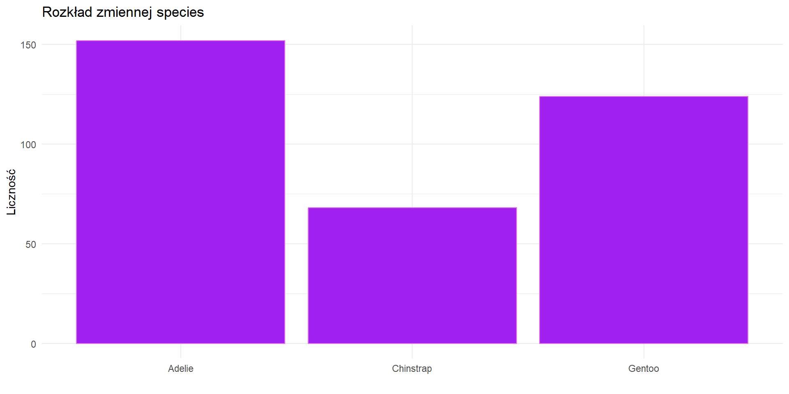
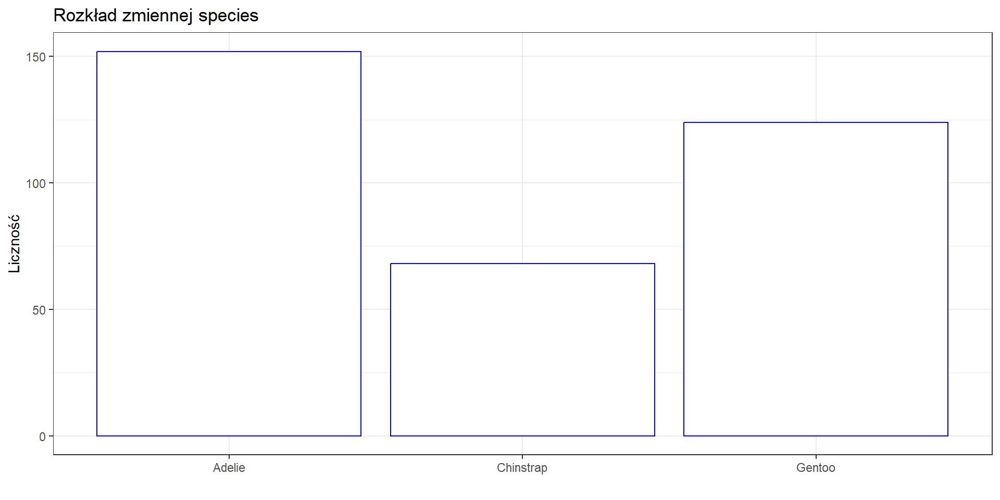
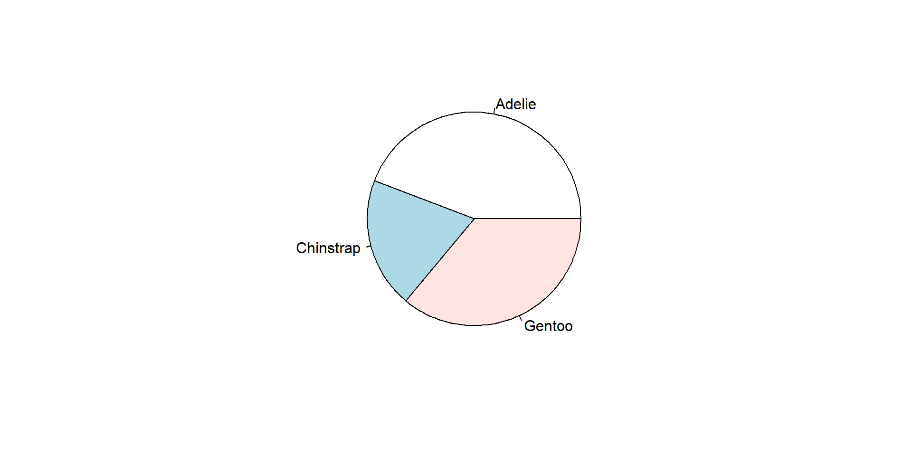
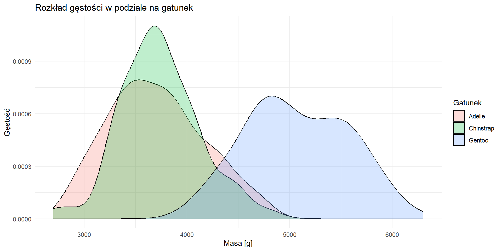
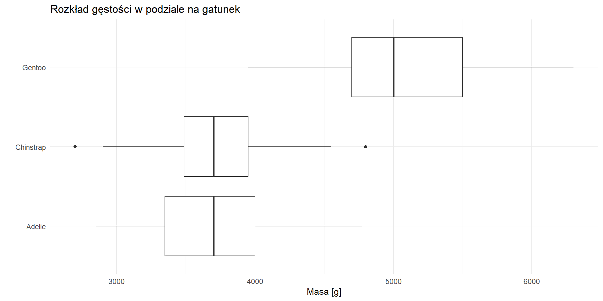
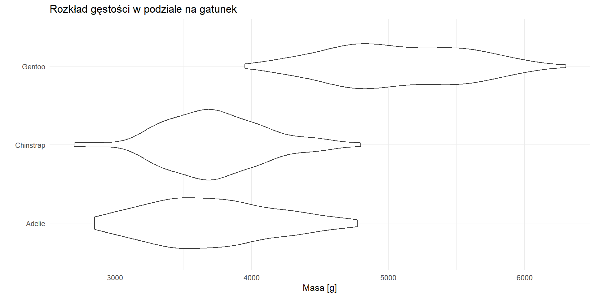
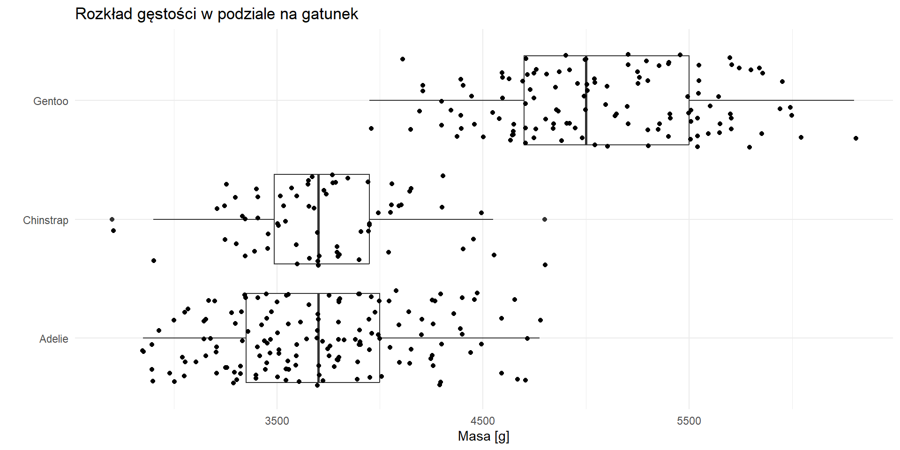
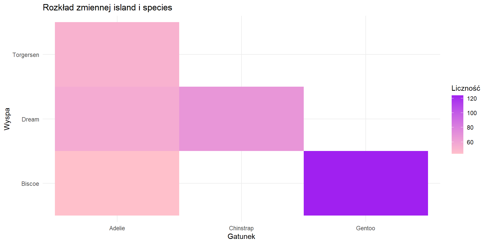
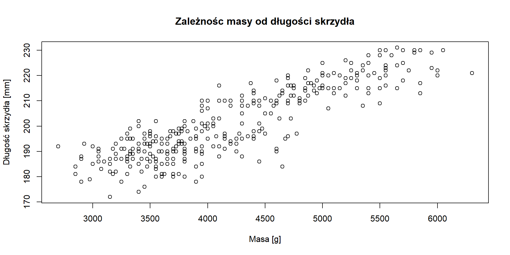

Sposoby zależą od typów zmiennych. Prawidłowe określenie na wstępie typów zmiennych pozwala na bezbłędny wybór metody/wizualizacji do analizy rozkładu.
Dane
Dane o pingwinach, dostępne w pakiecie palmerpenguins. Zbiór danych jest podobny do popularnego zbioru danych iris.
Wykres słupkowy z wykorzystaniem funkcji geom_bar()
! geom_bar() - zlicza występowanie kategorii
ggplot(data = penguins,mapping =aes(x = species)) +geom_bar(color ="#ea71ea", fill ="purple") +labs(title ="Rozkład zmiennej species ", x ="",y ="Liczność") +theme_minimal()

Rozkład zmiennej species - geom_col()
Wykres słupkowy z wykorzystaniem funkcji geom_col()
! geom_col() - podajemy w x/y kategorię i odpowiednio w x/y ich liczność
df <-data.frame(table(penguins$species))names(df) <-c("Gatunek", "Count")ggplot(df,aes(x = Gatunek ,y = Count)) +geom_col(color ="blue", fill ="white") +labs(title ="Rozkład zmiennej species", x ="",y ="Liczność") +theme_bw()

Rozkład zmiennej species - wykres kołowy
Wykres kołowy w base R wymaga zliczenia występowania obserwacji.
df <-table(penguins$species)pie(df)

Rozkład zmiennej species - wykres kołowy
W pakiecie ggplot2 nie istnieje funkcja do rysowania wykresu kołowego. Aby taki wykres uzyskać należy przygotować wykres słupkowy i zmienić współrzędne na biegunowe.
Badanie rozkładu dwóch zmiennych, zmienna jakościowa i zmienna ilościowa
wykres gęstości
wykres skrzypcowy
wykres pudełkowy
Rozkład zmiennej body_mass_g vs species - wykres gęstości
options(scipen =10)ggplot(penguins, aes(x = body_mass_g, fill = species)) +geom_density(alpha =0.25) +# alpha - przeźroczystośćlabs(x ="Masa [g]",y ="Gęstość",title ="Rozkład gęstości w podziale na gatunek",fill ="Gatunek") +theme_minimal()

Rozkład zmiennej body_mass_g vs species - wykres boxplot
options(scipen =10)ggplot(penguins, aes(x = body_mass_g, y = species)) +geom_boxplot() +labs(x ="Masa [g]",y =" ",title ="Rozkład gęstości w podziale na gatunek") +theme_minimal()

Rozkład zmiennej body_mass_g vs species - wykres skrzypcowy
options(scipen =10)ggplot(penguins, aes(x = body_mass_g, y = species)) +geom_violin() +labs(x ="Masa [g]",y =" ",title ="Rozkład gęstości w podziale na gatunek") +theme_minimal()

options(scipen =10)ggplot(penguins, aes(x = body_mass_g, y = species)) +geom_boxplot() +geom_jitter() +labs(x ="Masa [g]", y =" ", title ="Rozkład gęstości w podziale na gatunek") +theme_minimal()

Badanie rozkładu dwóch zmiennych, zmienne jakościowe
tabela
mapa ciepła (heatmapa)
Tabela
species
island Adelie Chinstrap Gentoo
Biscoe 44 0 124
Dream 56 68 0
Torgersen 52 0 0
Mapa ciepła (heatmapa)
penguins %>%group_by(species, island) %>%summarise(n =n()) %>%ggplot(aes(x = species , y = island, fill = n)) +geom_tile() +scale_fill_gradient(low="pink", high ="purple") +theme_minimal() +labs(title ="Rozkład zmiennej island i species",x ="Gatunek",y ="Wyspa",fill ="Liczność")

Badanie rozkładu dwóch zmiennych, zmienne ilościowe
wykres punktowy
wykres korelacji
Wykres punktowy - base R
plot(penguins$body_mass_g, penguins$flipper_length_mm,main ="Zależnośc masy od długości skrzydła",xlab ="Masa [g]",ylab ="Długość skrzydła [mm]")

Wykres punktowy - ggplot2
ggplot(penguins, aes(x = body_mass_g, y = flipper_length_mm,shape = species)) +geom_point() +labs(title ="Zależnośc masy od długości skrzydła",x ="Masa [g]",y ="Długość skrzydła [mm]",shape ="Gatunek") +theme(legend.position ="top")
ggplot(penguins,aes(x = body_mass_g, y = flipper_length_mm, color = species)) +geom_density_2d() +labs(title ="Zależnośc masy od długości skrzydła",x ="Masa [g]",y ="Długość skrzydła [mm]",shape ="Gatunek" ) +theme_minimal()